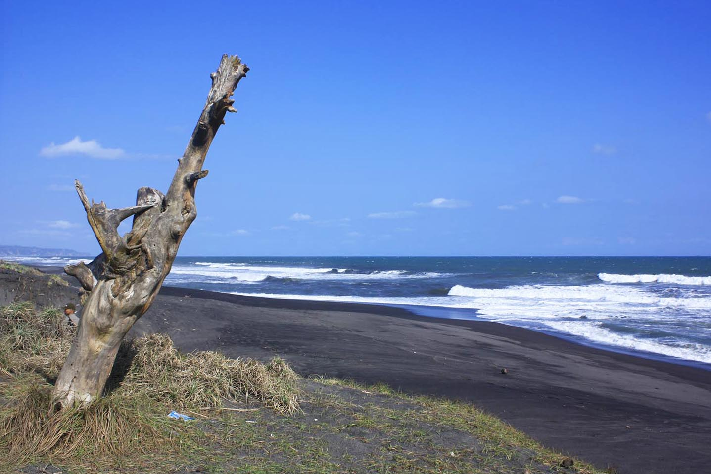
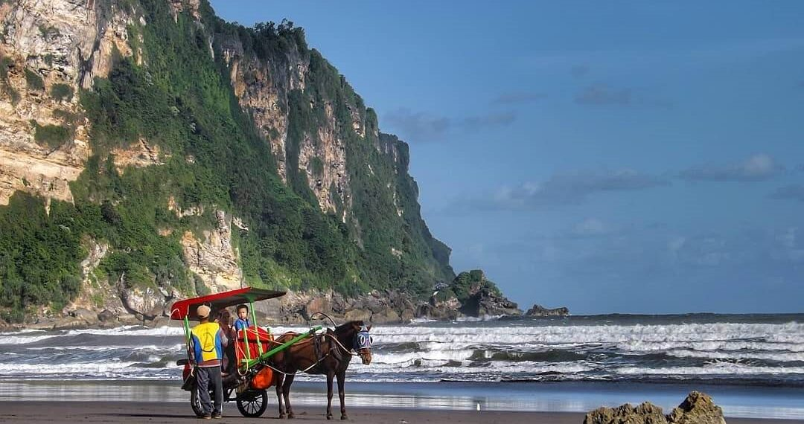
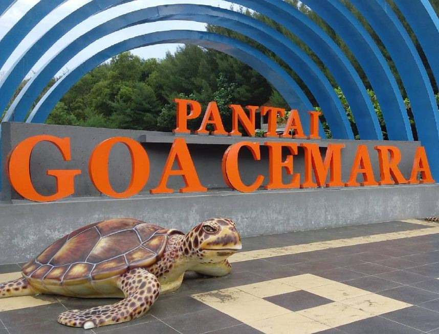
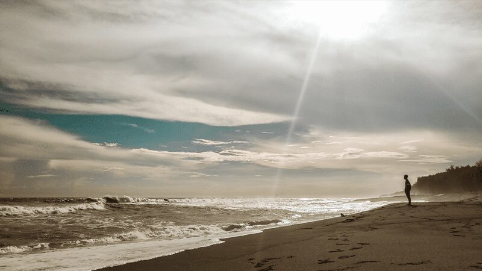
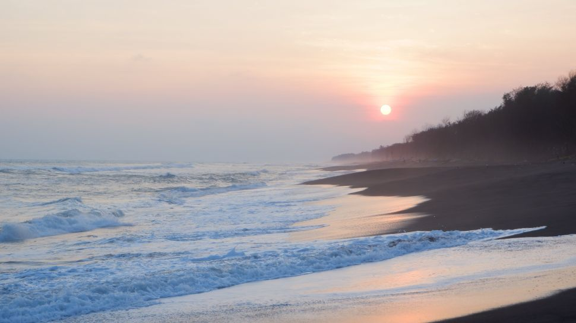
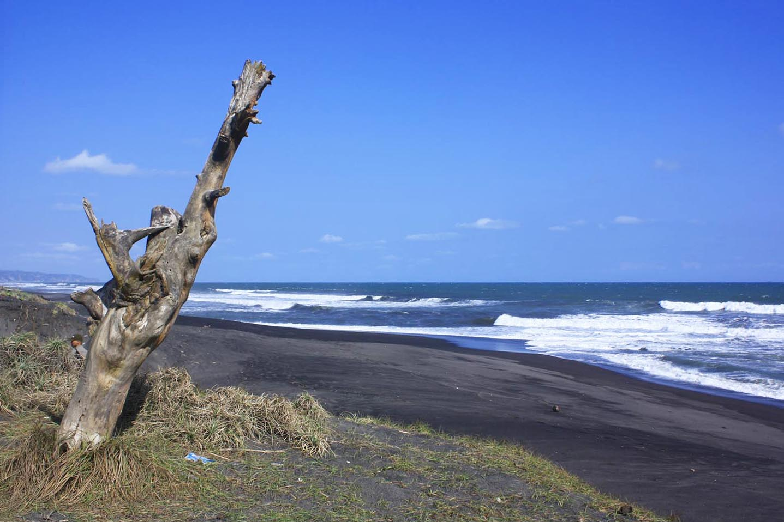
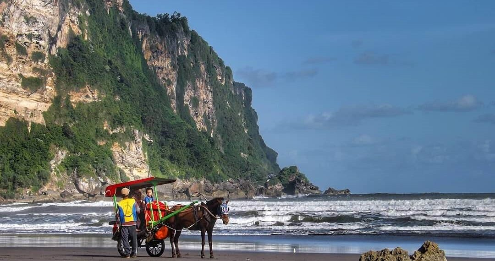
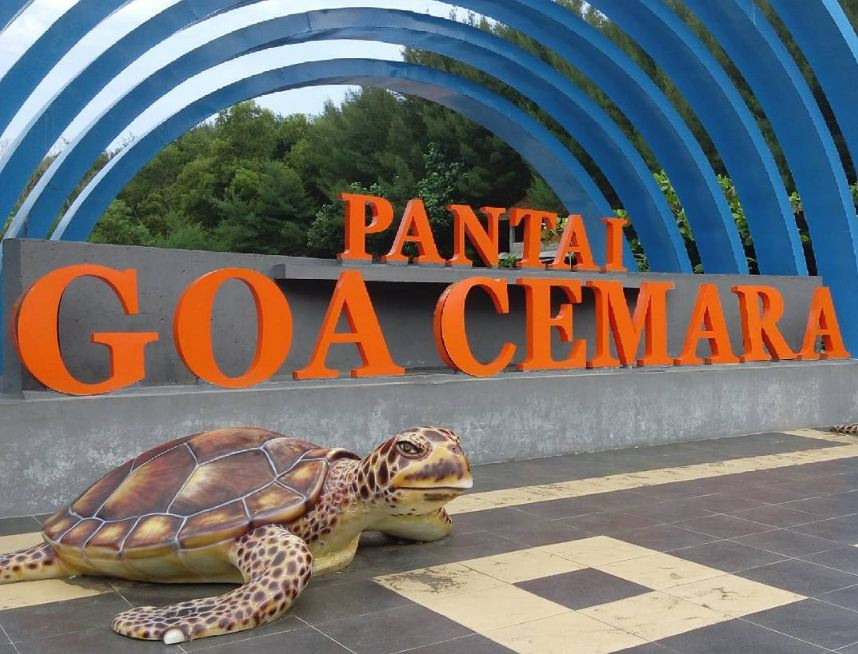
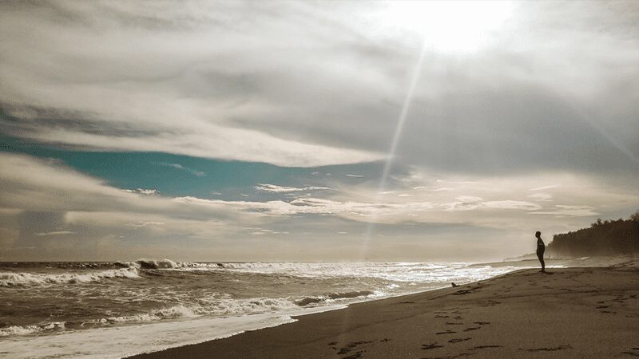
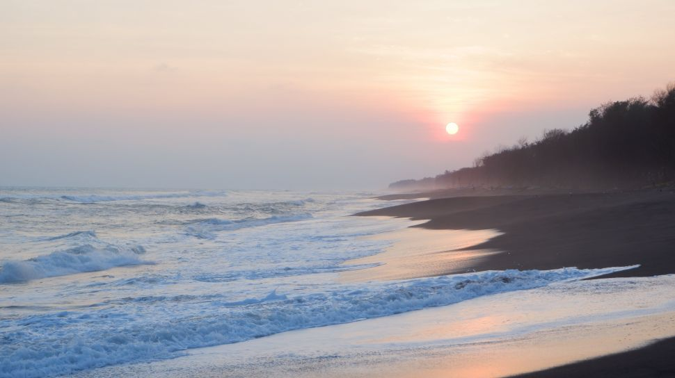

Ringkasan Tentang Bantul
Bantul adalah kabupaten di DIY yang terkenal tentang kultur yang melimpah dan keindahan alamnya.
Mengeksplorasi Keindahan Di Bantul, Yogyakarta
Bantul adalah kabupaten di DIY yang terkenal tentang kultur yang melimpah dan keindahan alamnya.
Bantul merupakan rumah bagi banyak situs bersejarah dan desa-desa tradisional yang mencerminkan identitas budaya Yogyakarta yang kuat.
Pantai yang terletak di sisi timur Pantai Parangkusumo ini memiliki legenda yang melekat dengan Ratu Kidul sebagai penguasa laut selatan dan keindahannya. Pantai ini merupakan pantai yang cukup luas di Yogyakarta, berbeda dengan pantai-pantai di kawasan Yogyakarta lainya seperti Pantai di Gunungkidul yang ukurannya relatif kecil.
Goa Cemara mempunyai ciri khas yang unik pada pantainya yang memiliki pasir berwarna hitam tapi lembut dengan ombak yang cukup besar kerakteristik pantai selatan. Pantai ini merupakan pantai pengembangan baru dimana terdapat banyak pohon Cemara udang rindang membentuk seperti goa, hal ini yang membuat pantai ini dinamai Goa Cemara. Pohon Cemara ini bertujuan untuk melindungi abrasi air laut dan menahan gumuk pasir supaya tidak mengalami perpindahan akibat tiupan angin.
Gua Pindul dikenal karena cara menyusuri gua yang dilakukan dengan menaiki ban pelampung di atas aliran sungai bawah tanah di dalam gua, kegiatan ini dikenal dengan istilah cave tubing.[2] Aliran sungai bawah tanah dimulai dari mulut gua sampai bagian akhir gua, di dalam gua terdapat bagian sempit yang hanya bisa dilewati satu ban pelampung, sehingga biasanya wisatawan akan bergantian satu per satu untuk melewati bagian ini.
 








